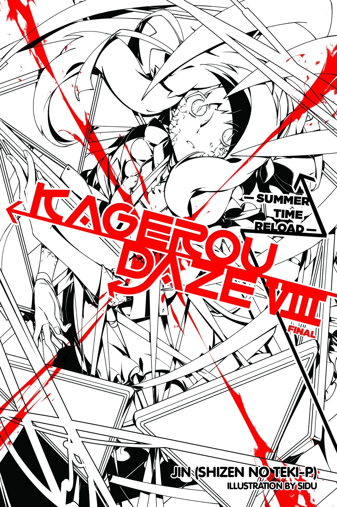
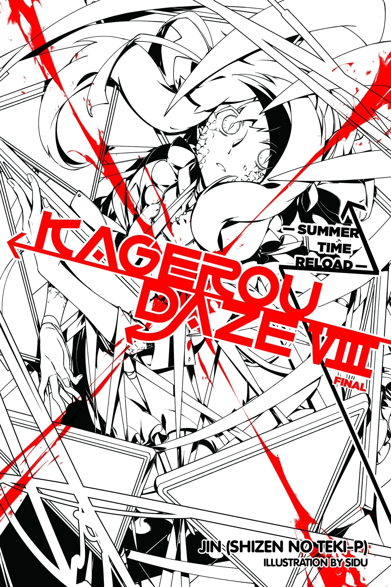

Novels
Kagerou Daze (カゲロウデイズ Kagerō Deizu) is a light novel series written by Jin (Shizen no Teki-P) and illustrated by Sidu and the sequel to the Manga Route. The series started May 30, 2012 and concluded in the eighth volume on December 29, 2017. The series, along with the manga, are licensed by Yen Press in North America. Kagerou Daze is currently the 26th best-selling light novel series of all time with 9 million copies sold, and in 2018 it was the 13th best-selling series.
 
